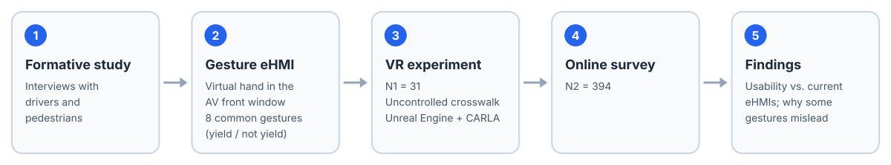

Summary
Interacting with pedestrians is one of the hardest problems for autonomous vehicles (AVs), given the limits of current algorithms and external human-machine interfaces (eHMIs). We designed gesture-based eHMIs modeled on how pedestrians and human drivers commonly communicate: a virtual hand shown in the AV's front window signals whether the vehicle will yield at an uncontrolled crosswalk.
Through a VR experiment (N1 = 31) and an online survey (N2 = 394), we found significant differences in usability between gesture-based eHMIs and current eHMIs. Well-chosen gestures made pedestrian and AV interaction more efficient while keeping it safe, whereas poorly chosen gestures led to misinterpretation. We trace these failures to ambiguity about who the gesture is meant for, and to whether a gesture reads as precise, polite, and familiar to pedestrians.
Method

Study overview.
Learning from human road users
We first interviewed drivers and pedestrians to understand how they commonly communicate with each other when negotiating a crossing. These everyday gestures became the design space for the eHMI.
A virtual hand as the eHMI
The eHMI renders a virtual hand in the AV's front window. Eight common gestures were selected to convey the vehicle's yielding or non-yielding intention at an uncontrolled crosswalk, and compared against conventional eHMIs.
Evaluation
The system was built in Unreal Engine with the CARLA simulator. In a VR experiment (N1 = 31), participants met the AV at an uncontrolled crosswalk; we recorded observation time, error rate, perceived danger, and physiological indicators. An online survey (N2 = 394) extended the evaluation to a larger sample.
Results
- Usability differs. Gesture-based eHMIs differed significantly in usability from current eHMIs.
- Good gestures help. Well-chosen gestures made the interaction more efficient while keeping crossings safe.
- Bad gestures mislead. Poorly chosen gestures were misinterpreted, which in the VR study led to unsafe crossing decisions.
- Why. Misinterpretation came from ambiguity about who the gesture was addressed to, and from whether a gesture seemed precise, polite, and familiar to pedestrians.
BibTeX
@inproceedings{chang2024gesturing,
author = {Chang, Xiang and Chen, Zihe and Dong, Xiaoyan and Cai, Yuxin and Yan, Tingmin and Cai, Haolin and Zhou, Zherui and Zhou, Guyue and Gong, Jiangtao},
title = {"It Must Be Gesturing Towards Me": Gesture-Based Interaction between Autonomous Vehicles and Pedestrians},
booktitle = {Proceedings of the 2024 CHI Conference on Human Factors in Computing Systems},
series = {CHI '24},
year = {2024},
location = {Honolulu, HI, USA},
publisher = {Association for Computing Machinery},
address = {New York, NY, USA},
doi = {10.1145/3613904.3642029}
}